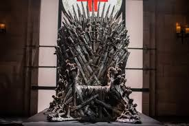

Bienvenidos al mundo de Games of Thrones
"Game of Thrones" es una serie épica de fantasía, drama y aventura donde varias casas nobles luchan por el trono de hierro.
Descubrí la historia de poder, traición y batallas en los siete reinos.
La serie se caracteriza por su tono adulto, lleno de intrigas políticas, alianzas estratégicas, traiciones y batallas espectaculares.
Al mismo tiempo, introduce elementos mágicos, criaturas legendarias y profecías antiguas que dan profundidad al mundo en el que se desarrolla.
Cada personaje tiene un camino marcado por el honor, la ambición, la venganza o el deber, haciendo que cada episodio mantenga la tensión y el suspenso.
